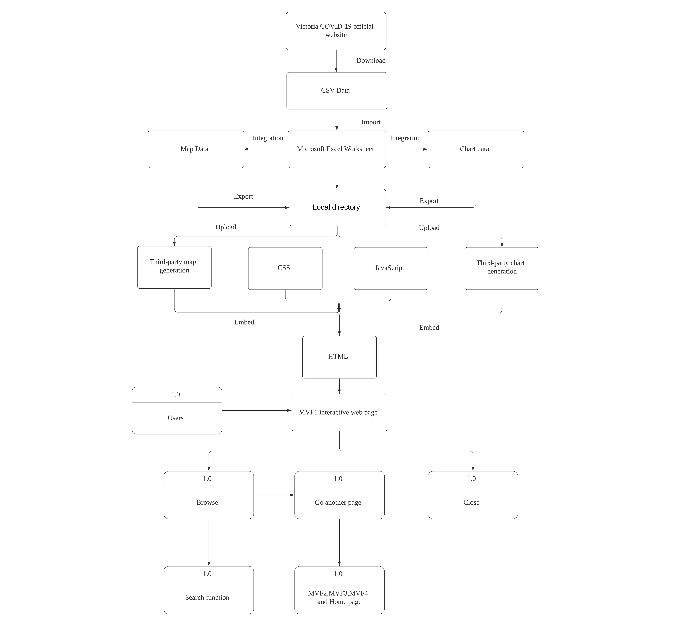
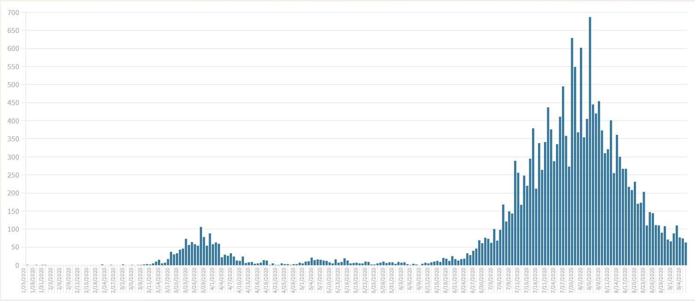

Description
The interactive Map as the homepage of our project to show users visual data of people affected by covid-19 in Victoria. We also use different color levels to indicate the extent to which different areas are affected by covid-19. After that, users can use the search function in the upper right corner to search for specific areas to view related data.
We download the csv data from the official Victoria website, then we integrate it through Microsoft Excel Worksheet, then upload the csv file to the third-party map generation page (BatchGeo). Finally embed the map link in our html.
Two charts are created below the interactive map. The purpose of this is that users can more intuitively combine the map to observe the data.The charts are dynamic and visual. When the user moves the mouse pointer to a specific column, the data will be displayed above it. They are generated by third-party software (A Flourish chart)
Evf3 part (Testing Facility Locations):
The reason for establishing this feature is to bring better interactive experience to users. First, set the address of each testing facility as a primariy key, then upload the csv file to the third-party map generation page (BatchGeo) . In this feature, the user can click on each mark to find the test location.
More details: Testing facility locations
User Stories
- As a journalist, I want to collect daily statistics to publish news
- As an uber driver, I can check which areas are more infected, so I can try to avoid entering those areas
MVF1 Flow chart
Use different colors to represent the affected area
The figure below shows the different colors indicating the extent of the impact of covid-19 in different regions. For example, red indicates the highest level. The range is 768-2143. The division is based on the percentage of the total number of people.
We have also created a display related data function and a switching function. The lower left corner of this chart is used to switch data display. The data display function is that when the user clicks on the mark in the chart, the corresponding data will be displayed on the top
Use chart to represent data
We import the csv file into a third-party web page, which can help us automatically generate the charts below, then edit and embed the obtained histogram into the html file.When the user moves the mouse to the chart, the current data will be displayed
Database
Description
We will also use the database to store user information, this purpose is to facilitate our later management and monitoring of how many users we have.
Method:
At this stage, it can only be executed through localhost. Because of time, the server has not been set up yet (Alibaba server), but it will be completed before the next report.We will create the registration function, login function ，logout function and build the database at this stage.The tools used are xampp and visual studio code
Design:
Login Design
Registration
SQL Design
Database
Validation
The verification method for the map is whether the map can be opened and operating normally, whether it can be clicked to view the information, whether the display data can be switched, and whether the color level is correctly divided
The method of database verification is: whether the data stored in the database can be displayed normally, if the stored information cannot be displayed normally on the webpage during the test, it means there is an error. The second point is whether you can use the registration and login functions. In other words, if the test fails to add the registration information to the database or fails to log in, it means there is an error
The verification method of the histogram is: if the map cannot be displayed dynamically, it means there is an error.